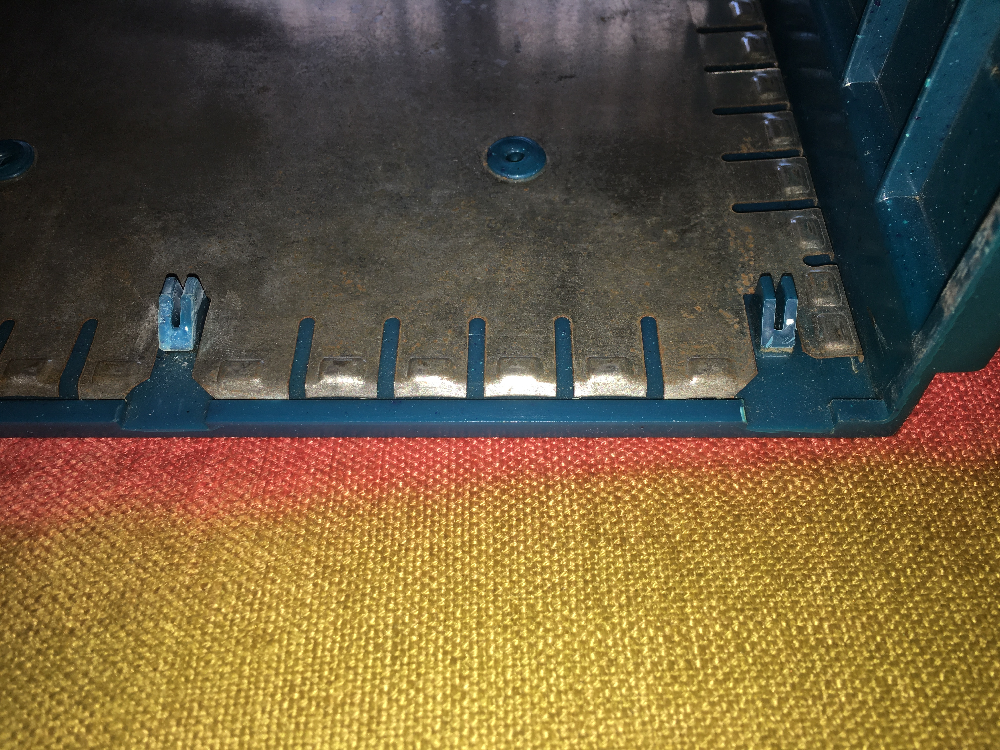

SGI Indy Sleeper PC - 2 Years Later
Published: October 2, 2024
Tags: PC Building, CAD, Soldering, C, Arduino
It's pretty common to see articles or videos about esoteric PC builds, but it's less common to actually get any follow-through on said PC's. It's been two years since I built my sleeper SGI Indy PC, so I think it's about time that I write an article about how the thing is holding up. The short and sweet of it is that I couldn't be happier with the PC! For a more thorough answer, read the rest of this article.
I will point out that I haven't really done any cleaning of the PC in those two years (on purpose), so you will see along with me how dusty the PC got.
Case Changes Since the Original Publishing
I mentioned in the previous article that there were still a few things that needed tweaking in the case, namely:
- The power LED wasn't hooked up
- Volume buttons at the front needed to actually do something
- The extra holes for I/O on the floppy disk side of the case needed to be adjusted in order to actually be usable.
- The rivets needed to be adjusted
- Cable management needed work
If you've gone back and read the previous article, I actually already talked about points 1 and 2. In summary, the LED was soldered onto a board and connected to the POWER LED cable in the motherboard, and the volume buttons were hooked up to an Arduino compatible board and connected directly to the motherboard via a USB header.
I mentioned in the article that the holes for the side I/O were, unfortunately, offset from where they should've been, which means that inserting a USB device would be risky if it had any thickness to it:

One solution for this would be to grind away at the hole with a dremel, like I had done in the past, but doing so would require me to disassemble the entire PC to ensure that I don't get any aluminum dust on the components, potentially causing short circuits. So I haven't really done anything with the side I/O just yet. I have, however, considered the possibility of using a USB-C slot instead, since it's supposedly The Future™.
Speaking of aluminum dust, I had explained that in order to make the grill mesh for the fans on the bottom of the PC, I had to manually shape a wire mesh that I bought. To make holes for the screws, I used a Dremel, which inadvertedly causes a lot of dust. So after finishing, I rinsed the pieces over and dried them to ensure that they were as clean as possible. Well, it turns out that the wire mesh has since rusted somewhat, and I'm not entirely sure if that was as a result of the wash... I only noticed this a few months later.
Look at that dust on the intake fan!
And on the topic of electric shock, I did also mention that typically aluminum cases are anodized to prevent electricity from going through them. Well, a month into using my PC, I reached for a USB at the back of my monitor and got a small electric jolt. I was confused at first and decided to shut down the PC as a precaution. Upon touching the PC case, I also got a small jolt. The hell? It turns out that the extension I was using for plugging the PC and monitor into did not have proper grounding in it. Swapping it over to one that did fixed the problem, and I haven't been jolted since.
Enough tangents, back to the points I outlined...
I haven't done any adjustments to the rivets at the back of the PC. To be honest, I don't really feel the need because the case is snuggly fit into the chassis. Plus, to weld the sides shut, I would need to disassemble the PC. I dun wanna >:(
Lastly, point 5 is regarding cable management, which I did get to sometime after publishing the article. I originally didn't do much cable management because I wanted to get myself some reusable velcro strips. These things are great, I don't understand why people continue to insist in using plastic cable ties. Not only are they not reusable because you have to cut them open to free them, you can also damage cabling in the process of removing them if you're not careful. Sure, the velcro strips aren't as cheap, but the long term convenience is totally worth it.
{kind=link}
I Need More Dust in my Life
So, let's open up the bad boy and take a look at what we're dealing with:
Yummy, dust!
Honestly, not too bad! Most of the dust seems to be accumulated in the intake and exhaust fans, with a light sprinkle of dust around every compoenent.
Buuuutttt, I think it's only fair that I also point out a very big asterisk. My PC is not placed on the ground or on a table like most systems would probably be. Rather, my PC is placed on top of a television stand, thus it is hanging high from any large sources of dust. This likely was a big help with regards to it not being as dusty as it could have been...
But the Indy does get a lot of dust on top of itself, and more annoyingly on the crevices that exist around the PC. Though that's not really the fault of my build, it's just how it is with an actual Indy.
Gotta use a brush to clean that
Since I did open up the PC, I will say that disassembly and assembly is really easy as it's just a matter of sliding the case out of the chassis. When I've needed to transport the PC, I always made sure to grab the case and the chassis with both hands, never just one. I don't know if the case will be able to support the chassis by itself and I am not willing to find out.
Hardware Changes
In the two years that I've had the PC, I've had to replace exactly zero parts of the original hardware, hooray! To be fair, if anything did stop working in two years I would be worried, but at least I could return it under warranty.
Originally, I bought an 1TB NVME SSD, and a second 1TB 2.5" SSD for the PC. The NVME would work as my main drive, while the 2.5" drive would be where I'd store games and large files. I did, however, also add a 1TB HDD to the PC. The reason for doing so was because I decided to upgrade my laptop's harddrive to an SSD, and then I Clonezilla'd the HDD into the SSD so I wouldn't lose any data. Having a loose drive, I just plopped it into my Indy (placing it on top of the SSD without screwing it down to anything, which you can see in the photo) so that I could have a backup of my laptop on my Indy. That saves me the trouble of having to FTP files around.
I will point out that having a loose hard drive like that is a bad idea. HDD's have a needle that's nanometers apart from the platter that holds the data. Shaking the disk around will cause the needle to vibrate and potentially scratch the surface of the platter. But I haven't really done much about this because I am not moving the PC around from place to place, and because I don't really mind losing the data on the disk. I mean, it would be inconvenient, but to properly secure the disk I'd have to dissasemble the entire PC to drill in new screw holes. Bleh.
Another thing that I did do was get a "second monitor". By that, I mean I bought an el-cheapo HDMI2AV converter box and I hooked up one of the HDMI ports on the GPU to it, allowing me to use the CRT on my desk as a second monitor. The quality is, surprisingly good for something that cost <20€!
It's really hard to convey on video how good some of these old 480p animated shows look on the CRT. It's almost as if they were designed to be viewed on them... Now, I definitely wouldn't want to use the CRT to read text, but for what I want to use it for (viewing videos and emulating old games) it works fantastically. My only major complaint about it is that the CRT only has one SCART input, so if I want to hook the N64 to it, I need to swap connectors around. I could get a switch box, but that's another thing I'd have to plug into a wall socket.
From this photo, you can see all the peripherals I've connected to the Indy. I have the power cable, a microphone (those two are covered up by the N64's power supply), ethernet cable, three USB devices, the main display port, and the HDMI cable for the second monitor. The microphone, unfortunately, uses a TRRS connector, so I had to buy a splitter in order for it to work. The blue USB cable is a 3.0 Type B that connects to the monitor in order to provide extra USB slots, while the white one above it is a USB hub. Next to that is the keyboard cable, which is connected to the motherboard's BIOS USB (funny thing, while looking up a photo of the backplate to remind myself of the name, I realized I actually have a third USB 3.0 slot under the ethernet cable, so my complaints in the next sentence are void. I'm amazed I never noticed this after 2 years of use... Whoopsie!). The reason for this is that connecting the keyboard to the monitor's hub would sometimes cause the PC to complain about a missing keyboard during boot. So while it's not ideal to have it connected there (for reasons I'll cover shortly), it hasn't brought me any trouble so far. Sound output has been from the monitor, since I bought one specifically with built-in audio. My only complaint about that is that, likely due to power saving measures in the monitor, long periods without audio will cause it to output buzzing noises.
There is a very minor problem about the PC when booting it, which is that sometimes pressing the power button to boot the system will take up to 5 seconds for anything to happen. From my research, there's a BIOS flashback button on the back of the motherboard (which is what the Motherboard's BIOS USB is supposed to use for) which, due to the compact nature of the PC, is currently stuck pressed. I can live with the rare 5 seconds of extra boot time, and I haven't had any problems with that USB slot being used for my keyboard, so I left it as-is.
I've also gotten myself an external disk drive, which I use to play some old games and rip my music CD's. Haven't had any problems with it or any other peripheral I've connected. I've also used the Wi-Fi dongle that comes with the motherboard once or twice without issues when I took the computer to events.
The Indy Case is Brittle
This is a very common complaint about SGI PC's, and it's unfortunately true for the Indy as well. While there hasn't been any scuffs on the outside of the PC, some of the little tabs on the inside of the case have, unfortunately, broken off. The locking handle that's at the back of the Indy is also held down by three melted plastic buttons, one of which was already broken when I got the case and another that eventually broke during a disassembly.

I've tried gluing them back on with some incredibly strong stuff a bunch of times, but it's inevitable that something will cause them to break off again. I can't say for certain that the fault lies with my chassis, I'm sure that this would happen with a normal Indy chassis anyway because the case already did arrive with two broken tabs. For the time being, I've kept the broken pieces safetly in a plastic bag.
One of the other downsides of the Indy's case is the buttons at the front. Since I don't actually have anything preventing the chassis from being pushed back, like the original Indy does on the locking piece on the back of the case, over time the power button becomes harder to press as it pushes the chassis away. So every now and then I have to push the chassis back in again so that the button can be properly pressed. I'm honestly kinda surprised that this is a problem though, it's such a tiny button that's being used to push a really heavy metal box. I feel like the problem might lie elsewhere, but I haven't been able to figure it out. Perhaps the front of the chassis is being pushed inward and not bending back? Or the plastic piece that holds the button is being pushed out (which I've noticed happens really easily).
Linux Woes
Before I built this desktop, I used an AlienWare M14X R1, dated around 2011. This laptop came with Windows 7, and I never upgraded it because Windows became more and more invasive as time went on. Unfortunately, the GeForce GT 555M that's soldered on stopped receiving driver updates right around the time Vulkan became a thing, so I couldn't really make a switch to Linux to take advantage of Wine. I made the controversial decision to stick to Windows 7 despite the lack of security, and my plan was to use Linux when I built a desktop PC. Boy am I glad I did. Now, that's not to say that Linux has been entirely painless.
To give a brief overview, I originally installed Xubuntu on this machine. The reason for doing so was that I wanted Ubuntu for the software support, and I had experience using Xfce. One of the things that I really like about Xfce is Compiz, because I'm a sucker for silly Desktop compositor shenanigans like Desktop Cube. However, I made the mistake of installing an LTS version of Ubuntu (22.04 to be exact). Everyone says it's more secure, but your tradeoff is that available software is laughably out of date. So much so that installing a bunch of recent software was impossible because the libraries bundled with the OS are so ancient, so I decided to drop 22.04 LTS and switch to 23.04. The upgrade, like I've always had the pleasure of happening with Ubuntu, broke the system. Instead of reinstalling XFCE, I opted to switch to Kubuntu because the latter looks a lot like Windows 7 out of the box, is actively developed with a lot of really strong features, and also because it supports silly desktop effects without the use of some outdated (and sometimes glitchy) software. I've been running Kubuntu since, having made the upgrade to 23.10 (with plenty of trouble, of course), and am currently waiting for 24.10 to release this month (despite Ubuntu pestering me to switch to 24.04 LTS).
{kind=link}
Now, I want to talk a bit about the GPU drivers before I focus on gaming. The Indy uses a 6700XT, that is connected to the motherboard via a GPU riser. Linux supports AMD GPU's out of the box thanks to the Mesa graphics stack, but there is some software which unfortunately doesn't properly work with the OpenCL integration in Mesa. The big one, for me, is Davinci Resolve. I use DR for editing together my videos, since After Effects and Premiere aren't supported on Linux, and the software is absolutely incredible and worth the asking price. Unfortunately, in order to use DR on Linux, you need to install the AMDGPU driver which only really supports LTS Linux. You can install it on a non LTS version, but it's not as obvious as it seems and I ran into a bunch of trouble doing so before I got it to finally work. However, for the first year I kept running into problems where, sometimes, the system would just not output anything, or crash when trying to wake from sleep. A few boot cycles would eventually fix it, until one day it didn't. Up until that day, I kept blaming my janky AMDGPU setup, but something wasn't really making sense. After disassembling the PC, I noticed that apparently, the GPU riser was nicked near one of the edges of the chassis, and thus had some copper exposed. I covered the nick with some electrical tape, and to this day I haven't had the problem since. In fact, I felt so confident that I folded the riser cable into a Z-Shape (which you can see in the interior photo) so that the extra length of cabling would not be pushing the Indy's case upwards. When I had tried to do that previously, the PC wouldn't output anything, but since covering up the nick I haven't had any GPU problems that I can think of!
Is 202X the "Year of the Linux Desktop"? In my humble opinion, it's not, but it's getting better and better! If there's any Linux die-hards reading this article (for some reason), you might be scoffing at my opinion with thoughts like:
"Of course you're having trouble, you incorrectly chose to use Ubuntu as your distro of choice when the obvious pick was Linux PoopyFace. Beginner's mistake!"
To which my answer is, if you need to explain to the layman what a "Distro" or "Desktop Environment" or "Window Manager", you've already lost. Sure, it might be obvious to you, local nerd, but people have better things to do than to worry about all of that. They want to be able to install and use their software without any headaches, but unfortunately due to the Linux ecosystem, it will be hard to undo 30+ years of software distribution standards.
In my opinion, there's a few things holding the OS back (some of which I'm admit are Ubuntu specific):
- The reliance on terminal. There is always something that you will need to use the terminal for. And while this is also true for Mac or Windows, it won't be true for 99.9% of those users. Unfortunately, Desktop Environments haven't been able to wrap GUIs around everything.
- Want to install software on Windows? Double click the EXE or MSI, and stuff will install. Want to do it on Linux? Well first you need to know if it's an Appimage, Deb file, Snap package, Flatpak... Oh what's that, the software you want requires a very specific version of a library which isn't supported anymore and is impossible to install because static linking is for morons? Sorry, nothing personnel, kid! Well, that's the benefit of Flatpaks, right? Whoopsie, this one's configured incorrectly so good luck being able to, for instance, import external files.
- If something goes wrong in Windows (let's say I accidentally deleted an important file in System32), the next time I boot the system I will be greeted with a screen telling me that there's a problem and I'll be provided with some troubleshooting options. Did your Wi-Fi stop working? You can right-click the Wi-Fi icon on your taskbar and you can try the built-in troubleshooter. Neither might actually fix the problem, but at least the option is there. Did you mess up your Linux install? You'll boot to a GRUB terminal and you're expected to unfuck it yourself without guidance. Have fun! That being said, Timeshift is a godsend, it should be built-in and not be something I have to install externally.
- Lack of systems coming with Linux built-in. Off the top of my head, I can only think of Steam Deck and Chromebooks as systems with Linux out of the box. I'm sure there's more, but you won't see HP, ASUS, or Lenovo laptops with Linux installed on it from the factory. This will be tough to deal with considering that Microsoft pays OEMs to ship Windows. Hard to compete with a multi-billion dollar company when most Linux distros are the work of unpaid developers.
- Toxic community. Trying to find help on online forums will, 50% of the time, be responded to with ridicule. "Why are you trying to do that? You're stupid, you don't want to do that / you shouldn't be doing it like that!!!". Not to mention, some Linux users will hop onto people's DM's whenever they complain about Windows/Mac, as if they're some prophet of Linus. I'm sure that's a minority, but I haven't really heard about Windows people doing that to Linux users.
- Lack of proprietary software. I know most Linux die-hards will scoff at the idea, but no one will want to move to Linux if Adobe products don't work on it. But Adobe won't support Linux if no one is using it. There's a Tweet by a game developer which says that Linux users account for 0.1% of the playerbase, but generates >20% of errors. That really doesn't surprise me given the amount of variablility in the Linux ecosystem.
Here's some other miscellaneous complaints about my personal Linux experience:
- I miss Paint.net. It's the only Windows application that I seriously miss. Alternatives are GIMP (which is one of the most horribly designed software that I can think of), and Pinta (which is amazingly buggy). I have been using Photoshop as a replacement, but the convenience and simplicity of Paint.net continues to be something I yearn for.
- The file manager that comes with KDE (Dolphin) has a bunch of quirks. The two that bother me the most is that folder zoom is global, and that double clicking options for files applies to everything. For instance, when I try to open a Lua file, it asks me if I want to execute the file or open in an editor. Launching an executable will ask me if I want to execute it or cancel. Both of these have a "Don't ask me again" option. If I tick it and choose to only ever open Lua files in a text editor, executables will refuse to open when I try to launch them because it tries to open them in an editor. Seriously???
- Despite there being a standard for where program files should be placed, a lot of professional software out there don't respect it. As a result, my home directory is littered with dot files fom all sorts of random software.
- Throughout the day, I put my desktop to sleep when I want to get off it, and then I turn it off at night. Linux has a feature where pressing any key on your keyboard will wake the PC from sleep. I don't want this, especially because I have cats in the house who enjoy walking over things. Turning it off required me to write a bodge script.
- Speaking of sleep, Steam somtimes prevents my system from going to sleep. Why on earth would you ever allow software to override your system's sleep functionality? I get that it can sometimes break software, but I'd rather my program crash than my PC be prevented to be put into a power saving mode.
- Speaking of software I don't have alternatives to, I have an iPhone, but iTunes is not supported in any way, shape, or form. I have to use a Windows VM specifically to sync stuff to my phone (not to mention I have to keep this data in sync with my laptop).
- Ever since I've gotten a second "monitor" (the CRT), the icons on my desktop will sometimes re-arrange themselves. I think this is because my CRT is connected via HDMI instead of display port, and so sometimes the DP will turn off first and KDE will think that the CRT is the only monitor that's plugged in, so it moves all the icons over.
- I hate being constantly pestered for my password. I get that it's in the name of security, but Windows solved it pretty well by having you click a button to allow for root operations, only requiring the password for very specific things. I've modified some system files to reduce the number of times I'm bothered to put in my password (and the delay between wrong password inputs), which isn't ideal but I was sick of having to type in a long password every time. Also, Dolphin will not allow me to perform operations on root files out of the box. I had to install an extension to Dolphin in order to open it as Root for these sorts of operations.
Now, I know that's a lot of time spent complaining about Linux, but honestly I am very happy with my choice. I'll gladly trade all of these inconveniences for more privacy and to support Free Software. Plus, I can always do something about these problems, the source code is available, and I do have the knowledge to fix it. Just gotta find the patience...
Although I humbly await for 24.10 to break my system!
1337 Gaming
This is probably the thing that a most people are interested about. I have to, once again, remind you that my Indy has best case scenario for cooling. I designed the chassis to intake air from the bottom and expel it out in whatever direction it can. The fact that it's on top of a TV stand, where its bottom is mostly unobstructed, is giving it more of a chance than keeping it on top of a desk would. I have also done very little to tune its fan curves and haven't done any overclocking.
While idle, the PC tends to stay around the 40-50 degrees mark. Not incredible but not too out of the ordinary for higher powered components. Here's a snapshot from the sensors command after 30 minutes of light browsing:
k10temp-pci-00c3
Adapter: PCI adapter
Tctl: +67.2°C
Tccd1: +60.8°C
nvme-pci-0100
Adapter: PCI adapter
Composite: +45.9°C (low = -273.1°C, high = +81.8°C)
(crit = +84.8°C)
Sensor 1: +45.9°C (low = -273.1°C, high = +65261.8°C)
Sensor 2: +52.9°C (low = -273.1°C, high = +65261.8°C)
iwlwifi_1-virtual-0
Adapter: Virtual device
temp1: +43.0°C
asusec-isa-0000
Adapter: ISA adapter
CPU Core: 0.00 V
VRM HS: 0 RPM
Chipset: +57.0°C
CPU: +49.0°C
Motherboard: +40.0°C
T_Sensor: -40.0°C
VRM: +0.0°C
CPU: 23.00 A
amdgpu-pci-0a00
Adapter: PCI adapter
vddgfx: 6.00 mV
fan1: 0 RPM (min = 0 RPM, max = 3300 RPM)
edge: +42.0°C (crit = +110.0°C, hyst = -273.1°C)
(emerg = +115.0°C)
junction: +43.0°C (crit = +110.0°C, hyst = -273.1°C)
(emerg = +115.0°C)
mem: +42.0°C (crit = +105.0°C, hyst = -273.1°C)
(emerg = +110.0°C)
PPT: 5.00 W (cap = 186.00 W)
I booted up Doom Eternal (which is the most recent AAA game I own), at max settings, 1080p, and picked out a stage from Ancient Gods Part 2. I found a spot where my framerate dropped from 144 to 120 and left the game running for 30 minutes. The PC was now sitting at about 70º C. For best performance, obviously one should stick to Vulkan whenever possible, OpenGL has a noticable performance impact.
k10temp-pci-00c3
Adapter: PCI adapter
Tctl: +82.0°C
Tccd1: +74.8°C
nvme-pci-0100
Adapter: PCI adapter
Composite: +46.9°C (low = -273.1°C, high = +81.8°C)
(crit = +84.8°C)
Sensor 1: +46.9°C (low = -273.1°C, high = +65261.8°C)
Sensor 2: +53.9°C (low = -273.1°C, high = +65261.8°C)
iwlwifi_1-virtual-0
Adapter: Virtual device
temp1: +44.0°C
asusec-isa-0000
Adapter: ISA adapter
CPU Core: 0.00 V
VRM HS: 0 RPM
Chipset: +60.0°C
CPU: +71.0°C
Motherboard: +47.0°C
T_Sensor: -40.0°C
VRM: +0.0°C
CPU: 46.00 A
amdgpu-pci-0a00
Adapter: PCI adapter
vddgfx: 843.00 mV
fan1: 1106 RPM (min = 0 RPM, max = 3300 RPM)
edge: +72.0°C (crit = +110.0°C, hyst = -273.1°C)
(emerg = +115.0°C)
junction: +73.0°C (crit = +110.0°C, hyst = -273.1°C)
(emerg = +115.0°C)
mem: +76.0°C (crit = +105.0°C, hyst = -273.1°C)
(emerg = +110.0°C)
PPT: 25.00 W (cap = 186.00 W)
I'll concede that Doom Eternal isn't the fairest game to use for performance comparisons, given that the game is optimized to hell (ha), but the results I'm presenting aren't too irregular from my experience of gaming on this machine.
In terms of fan noise, I'm not really the best person to judge that... You have to understand that my AlienWare M14X, on top of being a brick that can break through an immovable object, sounds like a jet engine taking off when it's doing anything remotely stressful. This isn't something that really bothers me because I just use headphones all the time. But my Indy? Definitely quieter than that. It has a very low humm all the time (unlike the AlienWare which would crank up the fans every few minutes), and only really gets louder when I start stressing it. However, this GPU does have noticable coil whine. I don't know if I got the short end of the silicon lottery, or if this sort of noise is just expected out of GPUs nowadays, but it is what it is. It probably doesn't help that the machine sits at about my chest height, less than a meter from my right ear. But, again, during gaming this sort of noise just gets tuned out, especially thanks to headphones.
Regarding game compatibility, pretty much everything in my Steam library works with very little tweaking. When something isn't working, a trip to ProtonDB will usually give me a command or two to plop into the launch options. For everything else, Wine or Lutris works 90% of the time. Of course, any game with a shitty anti-cheat won't work, but most of these are hyper-competitive F2P games, which is a genre of game I avoid like the plague. So nothing of value was lost for me :^)
I did, early this year, lose access to one crappy hyper-competitive F2P game that I did play due to the integration of an invasive anti-cheat: League of Legends. To be honest, I've been trying to get an excuse to drop this game for a while because Riot Games has a long history of employee harrasment. But the decision has been thankfully made for me! Also on the subject of being treated like a second class citizen, Epic Games' CEO Tim Sweeney has shown to be actively hostile towards Linux. So, the Epic Games Store is not likely to come to Linux any time soon, which is something that also does not bother me one bit :^)
Game modding is a bit of a mixed bag. If it's just a matter of replacing files or placing mods in a specific folder, that will be guaranteed to work. If you need to use an external program to manage (or make) mods, for instance, Frosty Mod Manager for games like Star Wars Battlefront II (2017), you might have a lot of trouble.
Lastly, concerning peripherals, I sometimes use a USB capture card so that I can connect my HDMI modded N64 to my PC and stream it. I haven't really had any trouble with this, VLC and OBS have worked perfectly well for handling the stream. I also got a customized Xbox One Wireless controller. Originally, the controller wouldn't sync with the PC, and the reason was because I needed to connect the controller to a Windows 10 machine and update its firmware. After doing that, the controller syncronized (via the wire) without any troubles. Silly that this workaround was needed (seriously Microsoft? It should be running the latest firmware out of the box), but I haven't really had any trouble with the controller since. I do play with it wired to the PC, so I can't really comment on its wireless capabilities (but from what I've read online, it's somewhat dodgy). For it to connect properly, I need to press the button on the center to turn it on, and then I need to connect it to the PC. Plugging it in directly without turning it on first won't work most of the time.
So, in general, I'm pretty happy with my PC's gaming performance.
Should You Make an SGI Indy PC?
So, after all of that, do I regret the Indy PC? Absolutely not! Should you build one? If you really want to, then I'd say go for it! You just have to understand that you are, in some way, picking form over function. The PC looks fantastic, but isn't necessarily as performant as it could be in a more suitable case. I would love to see the comparison of temperatures of the same hardware on the case of an SGI Indigo 2, which is way more spacious and designed for airflow. In fact, an Indigo 2 would also allow you to have a larger GPU and other peripherals like an internal DVD drive, so it might be more worth it for a sleeper SGI design.
The biggest problem, in my opinion, is that I will probably have trouble fitting in a different GPU if I decide to upgrade or replace it, because I designed the chassis specifically for this GPU. This is an issue with the design of the chassis, there's probably something that I can hook up to make it a bit more modular, but unfortunately it's not super easy to solve because GPU designs are not standardized. But that is a problem for future me!
Update 11/10/2024
October 10 came along, meaning it was time to update Kubuntu from 23.10 to 24.10. I made a restore point with timeshift, and proceeded to let it upgrade to 24.04 (you can't go directly to 24.10, you need to upgrade to the LTS version first). After it finished, I was greeted by a black login screen, even in recovery mode. This smelled like graphics issues, so I used timeshift to rollback the upgrade, and then I uninstalled the AMDGPU drivers.
Now the upgrade to 24.04 worked out of the box, and so did subsequently going to 24.10. But now I had a big problem: I need to install the AMDGPU drivers (so that I can use Davinci Resolve), but those drivers only go up to 22.04 (As of writing this blog post the drivers for 24.04 have been made available). Downloading the AMDGPU installer and running it with amdgpu-installer --usecase=opencl --no-dkms would result in the script complaining that the packages could not be found. I manually went to the AMD repository and found the packages there, available for Ubuntu 24.04, so I just manually downloaded the necessary packages and installed them one by one, manually installing the dependencies first.
After all of that, I was left with a login loop. So rolled back my changes with timeshift and tried different variations of the AMDGPU installer's commands, like trying to install only rocm. No matter what I'd do, either I was left with a login loop or Davinci Resolve would fail to detect OpenCL.
After about 8 hours since I first did my upgrade, close to giving up because it was 4AM, I found a Reddit post that explains how to get Davinci Resolve working on Ubuntu 24.04. I tried it, and to my surprise, it worked! The only difference was that the amdgpu-installer script this user linked to was one on AMD's rocm website and not the GPU drivers website. This other script properly managed to detect the new packages on AMD's repository and install OpenCL using the first command that I had tried. I was baffled, but I couldn't be happier. Updated system and Davinci Resolve working! Also, it seems that my complaint about desktop icons rearranging themselves has been fixed too. Hooray!
Too bad I woke up the next day with benign paroxysmal positional vertigo. I wonder if Linux is to blame...